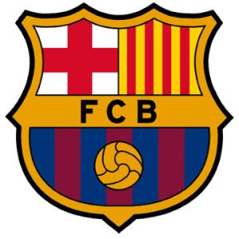
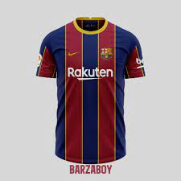
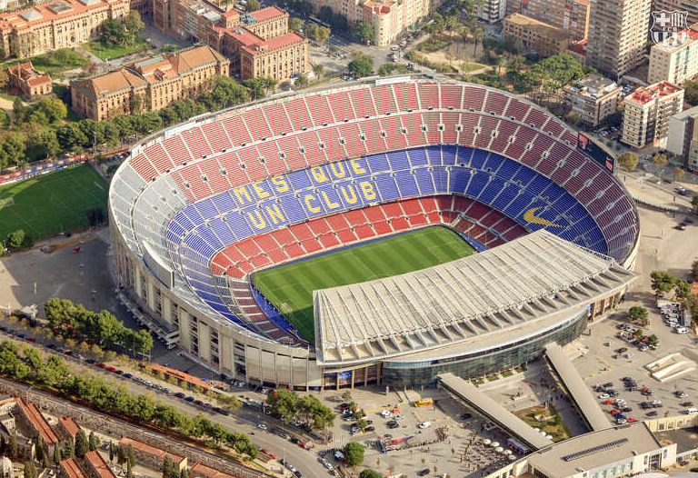

FC Barcelona
Główny
FC Barcelona, Barça, właśc. Futbol Club Barcelona – kataloński wielosekcyjny klub sportowy z Barcelony (Hiszpania), istniejący od chwili powstania męskiej drużyny piłkarskiej. Założony 29 listopada 1899 r. przez grupę Szwajcarów, Anglików, Katalończyków i Niemca, z czasem stał się katalońską instytucją o dużym znaczeniu społecznym. Jego motto to Més que un club (pol. Więcej niż klub). Męska drużyna piłkarska Barçy zdobyła m.in.: 5x Ligę Mistrzów, 26x Mistrzostwo Hiszpanii, 3x Klubowe Mistrzostwo Świata, 31x Puchar Hiszpanii, 4x Puchar Zdobywców Pucharów, 5x Superpuchar Europy i 13x Superpuchar Hiszpanii. FC Barcelona jest własnością 143 086 socis i posiada miliony kibiców na całym świecie, z których część zrzeszona jest w ok. 1270 oficjalnych penyes (fanklubach). Klub posiada m.in. następującą infrastrukturę: stadiony Camp Nou i Estadi Johan Cruyff, kompleks treningowy Ciutat Esportiva Joan Gamper, szkółkę piłkarską La Masia oraz halę sportową Palau Blaugrana. Poza sekcją piłkarską Barça prowadzi również profesjonalne sekcje koszykówki, piłki ręcznej, hokeju na rolkach i futsalu. Duma Katalonii posiada także drugą drużynę piłki nożnej, zespoły młodzieżowe i sekcje amatorskie. Jest jednym z trzech klubów, razem z Athletikiem Bilbao i Realem Madryt, które nieprzerwanie od założenia Primera División w 1929 r. grają w najwyższej klasie męskich rozgrywek piłkarskich w Hiszpanii.
Historia powstania klubu
29 listopada 1899 r. pasjonujący się futbolem 22-letni Szwajcar Hans Gamper wraz z grupą przyjaciół zebranych w sali gimnastycznej Gimnasio Solé, przy barcelońskiej ulicy La Rambla utworzył Foot-Ball Club Barcelona. Angielskie pochodzenie nazwy nie jest zbiegiem okoliczności, ponieważ pierwszy prezes klubu, Walter Wild i jego koledzy John Parsons i Wiliam Parsons pochodzili z Wielkiej Brytanii.
Symbol i barwy
Herb
Tarcza herbowa klubu posiada, popularny w XVI-wiecznej Europie, kształt dzbana. Jest to tarcza trójdzielna, gdzie dwa górne pola przedstawiają krzyż świętego Jerzego i barwy Katalonii, co nawiązuje do godła Barcelony, zaś w polu dolnym widnieje piłka na tle czterech granatowych i trzech bordowych pasów – barw klubowych. Pola górne od dolnego oddziela żółty pas, na którym widnieją inicjały klubu – FCB.
Stroje
Jednym z najbardziej wyróżniających się elementów FC Barcelony na tle innych klubów, są bordowo - granatowe barwy, które piłkarze prezentują na swoich koszulkach podczas spotkań.
Hymn
Obecny hymn FC Barcelona – Cant del Barça (pol. Pieśń Barçy) – powstał 27 listopada 1974 r. z okazji obchodów siedemdziesiątej piątej rocznicy założenia klubu. Muzykę skomponował Manuel Valls Gorina, natomiast słowa napisali: Jaume Picas oraz Josep Maria Espinàs i Massip. Zapis nutowy zachował się do dnia dzisiejszego. Wcześniej hymnem był utwór napisany przez Capdevilę i Rafaela Folcha. Wtedy wykonawcą podkładu muzycznego był Enric Morera.
Stadion
Camp Nou
Jego budowa trwała trzy lata i kosztowała 300 mln peset. Inauguracyjne spotkanie rozegrano 24 września 1957 r., a przeciwnikiem klubu ze stolicy Katalonii była Reprezentacja Warszawy. Gospodarze wygrali mecz 4:2.
Zawodnicy
| Zawodnik | Pozycja | Numer |
|---|---|---|
| Marc-Andre ter Stegen | bramkarz | 1 |
| Pena | bramkarz | 26 |
| Araujo | obrońca | 4 |
| Kounde | obrońca | 23 |
| Alba | obrońca | 18 |
| Blade | obrońca | 28 |
| Gavi | pomocnik | 6 |
| Pedri | pomocnik | 8 |
| de Jong | pomocnik | 21 |
| Bousqets | pomocnik | 5 |
| Fati | napastnik | 10 |
| Torres | napastnik | 11 |
| Lewandowski | napastnik | 9 |
| Raphinia | napastnik | 22 |
Interakcja